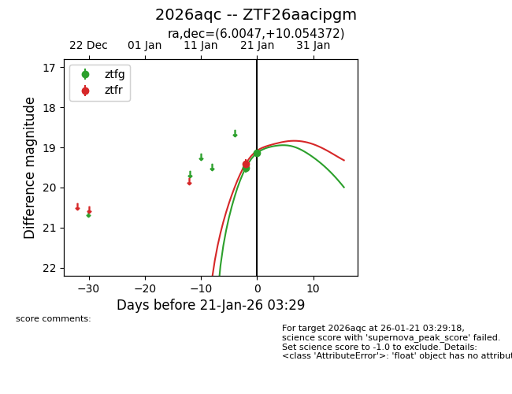
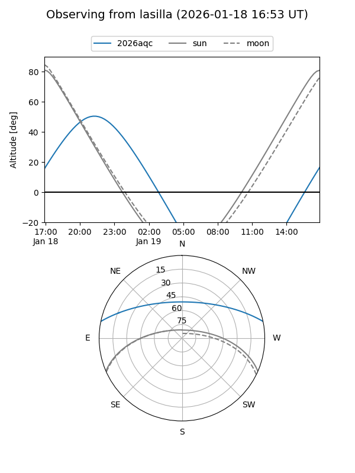
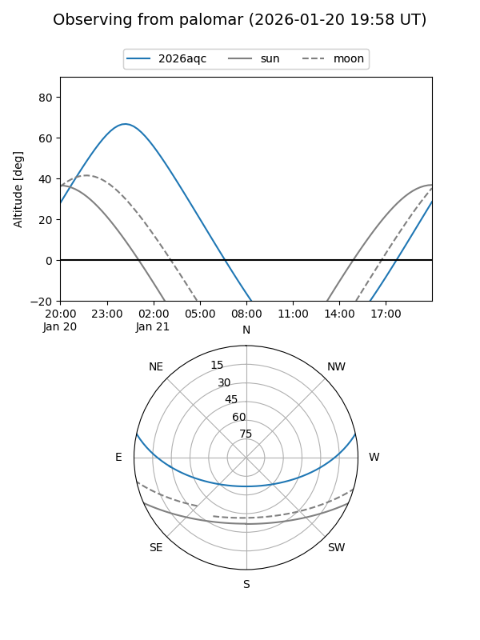
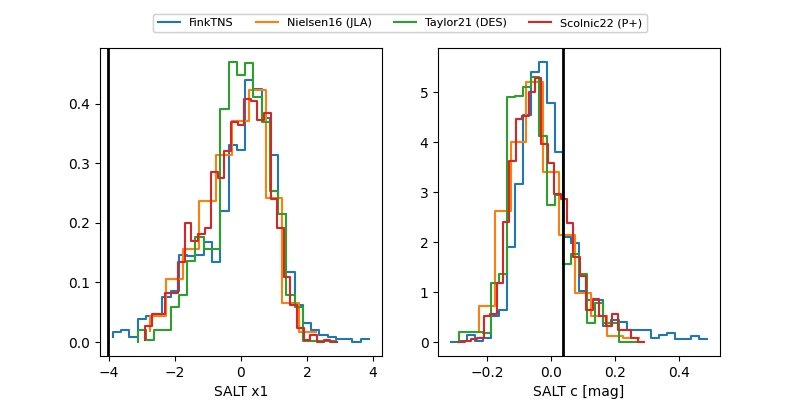

2026aqc
Target 2026aqc at 2026-01-21 03:31
Aliases and brokers:
FINK: link
Lasair: link
ALeRCE: link
TNS: link
YSE: link
alt names
ZTF26aacipgm (ztf,fink_ztf)
2026aqc (tns,yse)
Coordinates:
equatorial (ra, dec) = 6.0047,+10.05437
equatorial (HMS+DMS) = 00:24:01.12,+10:03:15.74
galactic (l, b) = (111.8705,-52.22750)
Flags:
Photometry:
last ztfg=19.14, ztfr=19.40
2 ztfg, 1 ztfr detections
Lightcurve

Visibility


Additional plots
